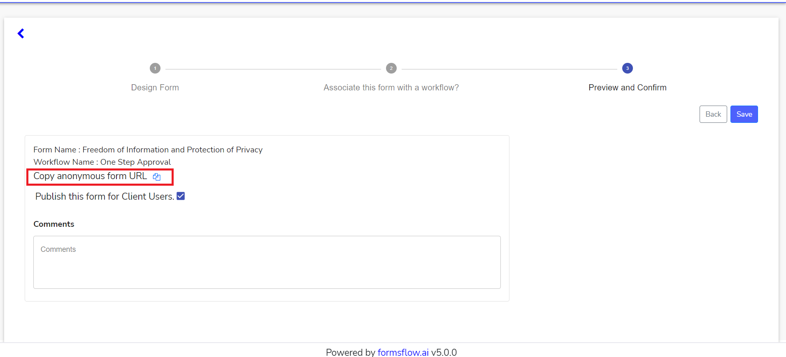

<article class="docs-article">
    <section class="docs-section" id="anonymous">
        <div>


            <h1 id="anonymous-workflow">Anonymous Forms</h1>
            <hr><br>
            <p>
                An anonymous form allows users to submit form entries anonymously. Users can access the
                form using the form url without login to the application.

            </p>
            <p>Below steps describes how you can design a form anonymous</p>
            <ol>
                <li>Create a new form or Edit an already created form. Check the field asking whether
                    you want to make the form public to make the form available to public.
                </li><br><br>
                 </p>
                <li>Assosiate a workflow if you want and move to the next stage.</li><br><br>
                <br><br>
                <li>In this stage, you can copy the anonymous form url and publish the form to the
                    client.Forms that are made anonymous and public will only appear publicly.</li>
                <br><br>

                <p></p>
                <strong>
                    Note-Forms will not be available to anonymous users if its not published
                </strong>
                <br><br>
                
                <br><br>
                <li>Designers can share the copied URL to other users for submitting anonymous forms.
                </li>
                <br>
                
                <br><br>
            </ol>


        </div>
    </section>
</article>